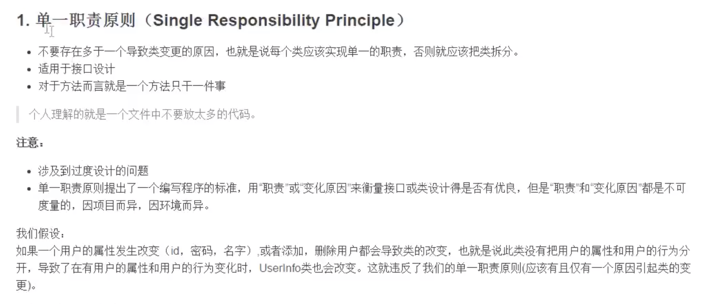
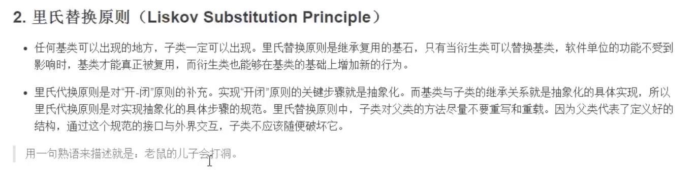
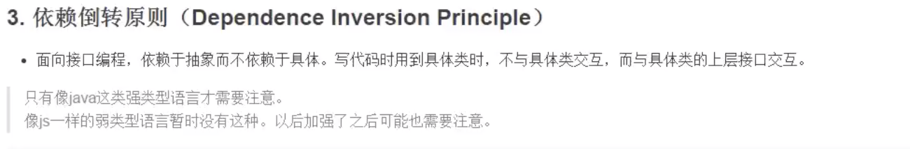
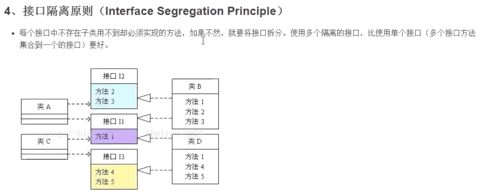
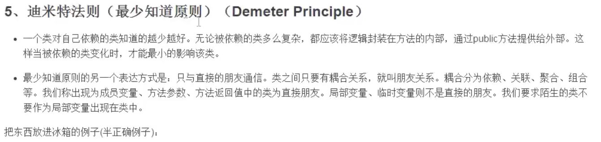
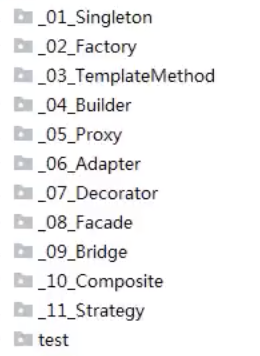

之前看过《JavaScript设计模式与开发实践》这本书，对书中的设计模式和一些相关案例也有了一定的了解，同时把这些设计模式的应用对应在在一些其他的项目中，进行了一些整理，如下仅供参考：
1)单一职责原则

2)里氏替换原则
3)依赖倒转原则
4)接口隔离原则
5)最少知识原则(迪米特法则)
6)开放封闭原则
总体来说设计模式分为三大类：
创建型模式，共五种：工厂方法模式、抽象工厂模式、单例模式、建造者模式、原型模式。
结构型模式，共七种：适配器模式、装饰器模式、代理模式、外观模式、桥接模式、组合模式、享元模式。
行为型模式，共十一种：策略模式、模板方法模式、观察者模式、迭代子模式、责任链模式、命令模式、备忘录模式、状态模式、访问者模式、中介者模式、解释器模式。
其实还有两类：并发型模式和线程池模式。
不过，对于前端来说，有的设计模式在平时工作中几乎用不到或者很少用到，接下来，我们了解下前端常见的设计模式
常见设计模式：
1、工厂模式
常见的实例化对象模式，工厂模式就相当于创建实例对象的new，提供一个创建对象的接口
x // 某个需要创建的具体对象 class Product { constructor (name) { this.name = name; } init () {} } // 工厂对象 class Creator { create (name) { return new Product(name); } } const creator = new Creator(); const p = creator.create(); // 通过工厂对象创建出来的具体对象比如：生产娃娃的工厂 属性：产地（东南亚/日本）、类型（硅胶/塑料）性别（男/女/未知）、
方法（功能）：说话（日本话、泰语），动作：360°自由旋转
应用场景：JQuery中的$、Vue.component异步组件、React.createElement、Axios.get等
2、单例模式
保证一个类仅有一个实例，并提供一个访问它的全局访问点，一般登录、购物车等都是一个单例。
xxxxxxxxxx // 单例对象 class SingleObject { login () {} } // 访问方法 SingleObject.getInstance = (function () { let instance; return function () { if (!instance) { instance = new SingleObject(); } return instance; } })() const obj1 = SingleObject.getInstance(); const obj2 = SingleObject.getInstance(); console.log(obj1 === obj2); // true比如：公共厕所、女盆友、随身物品
应用场景：JQuery中的$、Vuex中的Store、Redux中的Store等
3、适配器模式
用来解决两个接口不兼容问题，由一个对象来包装不兼容的对象，比如参数转换，允许直接访问
xxxxxxxxxx class Adapter { specificRequest () { return '德国标准插头'; } } // 适配器对象，对原来不兼容对象进行包装处理 class Target { constructor () { this.adapter = new Adapter(); } request () { const info = this.adapter.specificRequest(); console.log(`${info} - 转换器 - 中国标准插头`) } } const target = new Target(); console.log(target.request()); // 德国标准插头 - 转换器 - 中国标准插头比如：脱胎换骨，睡了一觉凸然长出了翅膀
应用场景：Vue的computed、旧的JSON格式转换成新的格式等
4、装饰器模式
在不改变对象自身的基础上，动态的给某个对象添加新的功能，同时又不改变其接口
xxxxxxxxxx class Plane { fire () { console.log('发送普通子弹'); } } // 装饰过的对象 class Missile { constructor (plane) { this.plane = plane; } fire () { this.plane.fire(); console.log('发射导弹'); } } let plane = new Plane(); plane = new Missile(plane); console.log(plane.fire()); // 依次打印 发送普通子弹 发射导弹比如：改造（比如 娃娃不能趴着）
利用AOP给函数动态添加功能，即Function的after或者before
xxxxxxxxxxFunction.prototype.before = function (beforeFn) { const _self = this; return function () { beforeFn.apply(this, arguments); return _self.apply(this, arguments); }}Function.prototype.after = function (afterFn) { const _self = this; return function () { const ret = _self.apply(this, arguments); afterFn.apply(this, arguments); return ret; }}let func = function () { console.log('2');}func = func.before(function() { console.log('1');}).after(function() { console.log('3');})func();console.log(func()); // 依次打印 1 2 3应用场景：redux中间件thunk 、ES7装饰器、Vuex中1.0版本混入Vue时，重写init方法、Vue中数组变异方法实现等
5、代理模式
为其他对象提供一种代理，便以控制对这个对象的访问，不能直接访问目标对象
xxxxxxxxxxclass Flower {}// 源对象class Jack { constructor (target) { this.target = target; } sendFlower (target) { const flower = new Flower(); this.target.receiveFlower(flower) }}// 目标对象class Rose { receiveFlower (flower) { console.log('收到花: ' + flower) }}// 代理对象class ProxyObj { constructor () { this.target = new Rose(); } receiveFlower (flower) { this.sendFlower(flower) } sendFlower (flower) { this.target.receiveFlower(flower) }}const proxyObj = new ProxyObj();const jack = new Jack(proxyObj);jack.sendFlower(proxyObj); // 收到花：[object Object]比如：我是他老子
应用场景：ES6 Proxy、Vuex中对于getters访问、图片预加载等
6、外观模式
为一组复杂的子系统接口提供一个更高级的统一接口，通过这个接口使得对子系统接口的访问更容易，不符合单一职责原则和开放封闭原则
xxxxxxxxxxclass A { eat () {}}class B { eat () {}}class C { eat () { const a = new A(); const b = new B(); a.eat(); b.eat(); }}// 跨浏览器事件侦听器function addEvent(el, type, fn) { if (window.addEventListener) { el.addEventListener(type, fn, false); } else if (window.attachEvent) { el.attachEvent('on' + type, fn); } else { el['on' + type] = fn; }}比如：暗恋
应用场景：JS事件不同浏览器兼容处理、同一方法可以传入不同参数兼容处理等
7、观察者模式
定义对象间的一种一对多的依赖关系，当一个对象的状态发生改变时，所有依赖于它的对象都将得到通知
xxxxxxxxxx class Subject { constructor () { this.state = 0; this.observers = []; } getState () { return this.state; } setState (state) { this.state = state; this.notify(); } notify () { this.observers.forEach(observer => { observer.update(); }) } attach (observer) { this.observers.push(observer); }}class Observer { constructor (name, subject) { this.name = name; this.subject = subject; this.subject.attach(this); } update () { console.log(`${this.name} update, state: ${this.subject.getState()}`); }}let sub = new Subject();let observer1 = new Observer('o1', sub);let observer2 = new Observer('o2', sub);sub.setState(1);观察者模式 与 发布/订阅模式区别: 本质上的区别是调度的地方不同
虽然两种模式都存在订阅者和发布者（具体观察者可认为是订阅者、具体目标可认为是发布者），但是观察者模式是由具体目标调度的，而发布/订阅模式是统一由调度中心调的，所以观察者模式的订阅者与发布者之间是存在依赖的，而发布/订阅模式则不会。
---观察者模式：目标和观察者是基类，目标提供维护观察者的一系列方法，观察者提供更新接口。具体观察者和具体目标继承各自的基类，然后具体观察者把自己注册到具体目标里，在具体目标发生变化时候，调度观察者的更新方法。 比如有个“天气中心”的具体目标A，专门监听天气变化，而有个显示天气的界面的观察者B，B就把自己注册到A里，当A触发天气变化，就调度B的更新方法，并带上自己的上下文。
---发布/订阅模式：订阅者把自己想订阅的事件注册到调度中心，当该事件触发时候，发布者发布该事件到调度中心（顺带上下文），由调度中心统一调度订阅者注册到调度中心的处理代码。 比如有个界面是实时显示天气，它就订阅天气事件（注册到调度中心，包括处理程序），当天气变化时（定时获取数据），就作为发布者发布天气信息到调度中心，调度中心就调度订阅者的天气处理程序。
比如：观察对方是否喜欢自己、警察和小偷
应用场景：JS事件、JS Promise、JQuery.$CallBack、Vue watch、NodeJS自定义事件，文件流等
8、迭代器模式
提供一种方法顺序访问一个聚合对象中各个元素, 而又无须暴露该对象的内部表示
可分为：内部迭代器和外部迭代器
内部迭代器： 内部已经定义好迭代规则，外部只需要调用一次即可。
xxxxxxxxxxconst each = (args, fn) => { for (let i = 0, len = args.length; i < len; i++) { const value = fn(args[i], i, args); if (value === false) break; }}应用场景： JQuery.each方法 、Array.prototype.map
外部迭代器：必须显示的请求迭代下一个元素。
xxxxxxxxxx// 迭代器class Iterator { constructor (list) { this.list = list; this.index = 0; } next () { if (this.hasNext()) { return this.list[this.index++] } return null; } hasNext () { if (this.index === this.list.length) { return false; } return true; }}const arr = [1, 2, 3, 4, 5, 6];const ite = new Iterator();while(ite.hasNext()) { console.log(ite.next()); // 依次打印 1 2 3 4 5 6}应用场景：JS Iterator、JS Generator、遍历链表中的next、二叉树遍历中的left/right
9、状态模式
关键是区分事物内部的状态，事物内部状态往往会带来事物的行为改变，即允许对象在内部状态发生改变时改变它的行为
xxxxxxxxxx// 红灯class RedLight { constructor (state) { this.state = state; } light () { console.log('turn to red light'); this.state.setState(this.state.greenLight) }}// 绿灯class greenLight { constructor (state) { this.state = state; } light () { console.log('turn to green light'); this.state.setState(this.state.yellowLight) }}// 黄灯class yellowLight { constructor (state) { this.state = state; } light () { console.log('turn to yellow light'); this.state.setState(this.state.redLight) }}class State { constructor () { this.redLight = new RedLight(this) this.greenLight = new greenLight(this) this.yellowLight = new yellowLight(this) this.setState(this.redLight) // 初始化为红灯 } setState (state) { this.currState = state; }}const state = new State();state.currState.light() // turn to red lightsetInterval(() => { state.currState.light() // 每隔3秒依次打印红灯、绿灯、黄灯}, 3000)比如：女生的心情
应用场景：灯泡状态、红绿灯切换等
其他设计模式：
10、命令模式 11、组合模式 12、享元模式 13、策略模式 14、职责链模式 15、模板方法模式 16、中介者模式 17、备忘录模式 18、访问者模式 19、解释器模式 20、桥接模式
